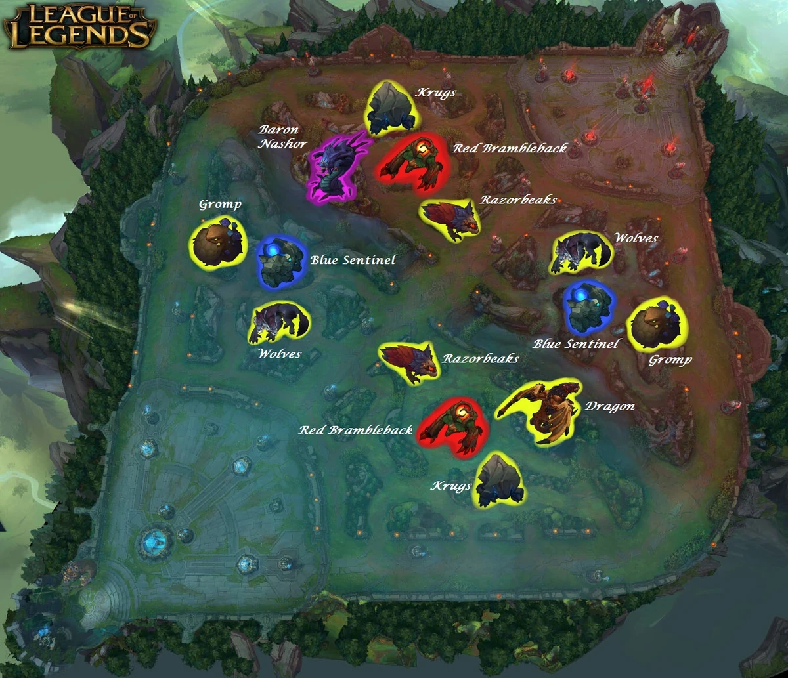
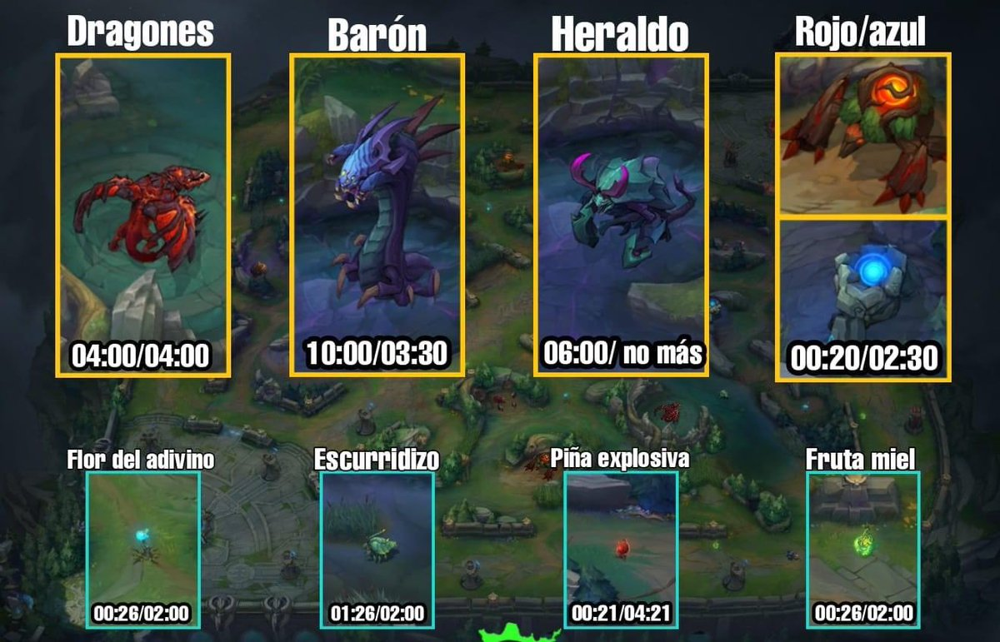
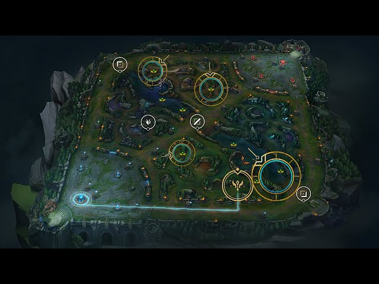

Principios basicos que debes saber
Como jungla en League of Legends, tu rol es controlar el mapa y crear ventajas para tu equipo. No debes pensar en ayudar pasivamente; eres el jugador clave del juego. Prioriza objetivos como el Rift Herald y el Dragon, mantén un buen tracking del enemigo, y no subestimes la importancia de invadir la jungla enemiga. Usa tu tiempo eficientemente: elimina monstruos con rapidez, pero también sabrá cuándo saltar a los lanes para apoyar. La visión y el conocimiento del minimapa son cruciales. Recuerda: ser jungla no es ser support; tu impacto debe ser directo y estratégico. Recuerda que no tiltearse es la clave!
¿Por donde empezar en la jungla?

Al comenzar en la jungla de League of Legends, la decisión depende de la ruta de gankeo y la necesidad de maná. Generalmente, empieza en el bufo opuesto a la línea que quieres ayudar primero (bot suele dar mejor leash), usando el Azul para campeones dependientes de maná y el Rojo para limpiar rápido o asegurar ralentización.
Prioridad de Gankeo:
Comienza en el lado opuesto de la línea que deseas gankear al nivel 3 (por ejemplo, empieza top para terminar en bot).
Leash:
Históricamente, la línea inferior (botlane) ayuda más y mejor al jungla en el primer bufo que la superior (toplane).
Seguridad
El lado azul tiene mejor ángulo de cámara (54% winrate en alto elo), mientras que el rojo requiere más atención al mapa.
Limpieza rapida
Campeones de daño físico suelen preferir el Rojo (Red) para limpiar más rápido gracias a la quemadura y curación. Solo empieza por el blue si tu campeon sufre por mana (Evelyn, Lillia) deben iniciar por blue
Consejo rapido
Elige la mascota roja si buscas más daño y quemadura, o la verde si necesitas más resistencia
¿Que campeon utilizar? ¿Que armarse? ¿Como jugar?

antes de continuar, si eres nuevo en la jg, te recomiendo campeones sencillos como warwick, amumu, nocturne o maestro yi por su rapida limpieza
¿Que me armo segun mi campeon?
Objetos "Core" (Núcleo):
Son los 1 o 2 objetos que tu campeón necesita sí o sí para funcionar. Por ejemplo, un asesino siempre buscará Letalidad, mientras que un tanque buscará Vida y Resistencias.
Identifica el daño enemigo:
Si tienen mucho daño fisico (AD)o daño magico (AP) compra armadura o resistencia magica.
Si ves que el equipo contrario tiene muchos tanques, compra penetracion porcentual como Rencor de Serylda o el Recordatorio Mortal
Recomendacion de posibles items
| Daño fisico | Daño magico | Tanque |
|---|---|---|
| Presagio de randuin | Rostro espiritual | Baston del vacio (ap) |
| Cota de espinas | Fuerza de naturaleza | Recordatorio mortal |
| Corazon de hielo | Mascara abisal | Desgarrador divino |
Asegura los objetivos

Asegurar objetivos (dragones/heraldos) requiere prioridad de línea, visión previa y seguimiento del jungla enemigo. Prepara el área 1-2 minutos antes, farmea cerca y asegura que tus aliados empujen (pusheen) para rotar antes. Nunca inicies solo si no sabes dónde está el jungla rival.
Prioridad de Línea (Lane Priority):
Gankea la línea cercana al objetivo (ej. Bot para Dragón) para forzar al rival a quedarse bajo torre o darte ventaja numérica.
Visión y Control:
Coloca wards en el río y jungla enemiga con centinelas de control (pink wards) para rastrear al jungla rival.
Rastreo del Jungla Enemigo:
Si ves al jungla enemigo en el top, haz el dragón inmediatamente. Si están todos desaparecidos, no lo inicies.
El Smite (Castigo):
Asegúrate de tener el smite disponible. Mantén la calma y usa el smite cuando la vida del objetivo sea menor que el daño de tu hechizo.
Evita forzar
Si tu equipo está perdiendo feo o no tiene vida/maná, es mejor ceder el objetivo que regalar una muerte doble y el objetivo.
Conocimiento del mapa

En el mundo de League of Legends, el conocimiento del mapa es el arma secreta que puede convertir a un jugador normal en un genio de la estrategia. Los usuarios miran constantemente el mapa para localizar a sus compañeros, enemigos y minions. Entender el minimapa y usarlo con eficacia separa a los profesionales de los aficionados.
Entender el minimapa
El minimapa de LoL es una pequeña pero poderosa herramienta que proporciona una vista de todo el campo de batalla para identificar objetos y anticiparse a los movimientos circundantes. Situado a la derecha o a la izquierda de la pantalla, dependiendo de las preferencias del jugador, ofrece información crítica sobre las posiciones de aliados y enemigos, los objetivos y la colocación de los ward.
Conocimiento de los objetivos
Cuando los usuarios entienden cada objetivo en el minimapa, pueden notar áreas clave con grandes impactos en el juego que requieren atención especial. Estos objetos pueden incluir barons, dragones, torretas, inhibidores, potenciadores y campamentos en la jungla.
Conocimiento del enemigo
Saber dónde están los enemigos en cada momento ayuda a los usuarios a anticiparse a sus ataques y tomar decisiones informadas. También permite a los jugadores realizar emboscadas más sigilosas o evitar ataques.
Controlar los maps mediante los wards

El control de la visión del rol de apoyo es primordial. Los support pueden ayudar a sus compañeros de equipo con escudos, curaciones, daño de ataque y velocidad de movimiento para proporcionar una alta proporción de asistencia por muerte. Los jugadores tanque son los más difíciles de matar gracias a su alta resistencia mágica, armadura y salud. Sin embargo, infligen un daño mínimo, por lo que su trabajo consiste en proteger al equipo e incapacitar al enemigo.